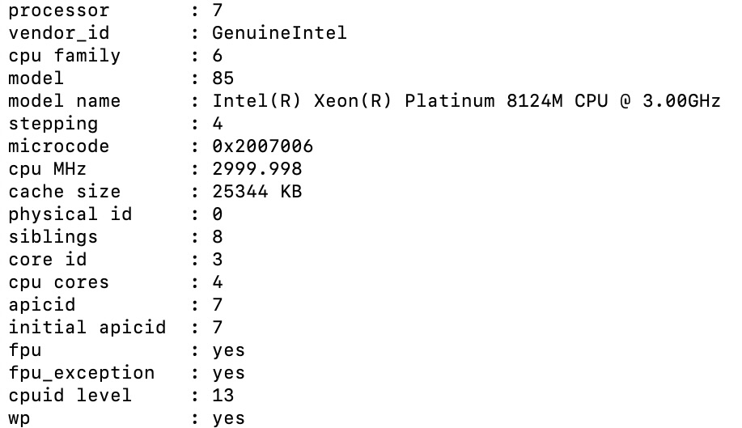

Sizing guidance for rendering in a medium-sized Kubernetes configuration
Introduction
In Digital Experience (DX) performance testing, it is important to determine both DX container sizing and the relationships between the components that make up DX. The goal of performance testing is to identify the optimal Kubernetes configurations for varying levels of DX demands, ranging from small to large setups. This sizing guidance examines these factors in a configuration using 10,000 Virtual Users.
In this investigation, the key performance indicators are the number of concurrent users, the average response time, and throughput. These metrics serve as benchmarks for evaluating the performance of a medium DX configuration, providing insights into the system's ability to handle specific loads. This topic also explores the impact of core tuning adjustments, pod scaling, node scaling, and pod configuration modifications on enhancing system responsiveness. This sizing guidance shows how strategic changes can lead to significant improvements in performance.
The sizing tests examined rendering scenarios for Web Content Manager (WCM), portlets, and Digital Asset Management (DAM). The tests were facilitated by a rendering setup deployed on AWS/Native-Kubernetes (Kubernetes installed directly in Amazon EC2 instances). This topic presents a comprehensive overview of the findings, offering guidance for organizations seeking to optimize their DX platforms for peak performance.
Methodology
Overview of DX rendering sizing-performance tests
This sizing work consisted of rendering scenarios of WCM, portlets, and DAM with a rendering setup enabled in AWS/Native-Kubernetes (Kubernetes installed directly in Amazon EC2 instances). A combination run was performed that rendered WCM content, DAM assets, and DX pages and portlets. The load distribution was WCM content (40%), DAM assets (30%), and DX pages and portlets (30%). All systems were pre-populated before performing the rendering tests.
To achieve the 10,000 concurrent users mark, an initial set of runs was done with a lower number of users on a multiple node setup with varying numbers of worker nodes. The tests started with three worker nodes. The number of worker nodes and pods was increased as needed to achieve the desired load with an acceptable error rate (< 0.01%). After establishing the number of nodes, further steps were taken to optimize the limits on the available resources for each pod, as well as the ratios of key pods to each other.
The following sections provide details for the WCM default test data - 200 pages, DAM default test data - 25,000 assets, and Pages and portlets default test data - 80 pages.
WCM default test data - 200 pages
This setup is common in most of the scenarios where there are multi-nested site areas in libraries with content such as rich text, PDF files, and images in a page and nearly 200 pages in a medium configuration. Refer to the following list for more information about this setup:
-
The default test data has a WCM design library called "PerformanceTestDesign" and five content libraries named "PerformanceTestContent01" through "PerformanceTestContent05".
-
Each content library contains four levels of site areas, with four site areas per level. Only the 256 leaf site areas contain content.
-
Each leaf site area contains ten content items, for a total of 12,800 content items across the libraries.
-
Half of the content items are visible to "Anonymous" and "All Authenticated" users. The other half are visible only to members of ten groups per content item. These ten groups are spread out among the 500 groups assumed to exist in the test LDAP (and assumed to be called "Group0000" through "Group0499").
-
Half of the content items visible to members of ten groups per content item are profiled with the keyword "MENU".
-
There are 20 test portal pages created under the label "PerformanceTest". Each has a friendly URL of the form "
/perf/page-xx". -
Each page contains six WCM viewer portlets that show content below one of the twenty top level site areas. Pages 01 to 04 show content from site areas "SA01" through "SA04" in library "PerformanceTestContent01". Pages 05 to 08 show content from site areas "SA01" through "SA04" in library "PerformanceTestContent02", and so on.
-
Four of the portlets on each page show single content items. For page 01, these would be the first content items in site areas "SA01.01.01.01", "SA01.02.01.01", "SA01.03.01.01", and "SA01.04.01.01" respectively. Other pages follow the same pattern.
-
Another portlet on each page shows a navigator of site areas and content items below the same top-level area.
-
The final portlet on each page shows a menu of items. This portlet is scoped to the top-level site area and selects only those items profiled with the "MENU" keyword.
-
A total of 99999 users was added to openLDAP as authenticated users.
DAM default test data - 25,000 assets
The following DAM setup covers the mix and match of the different types of most commonly used assets in three different ways: UUID, custom, and friendly URLs. Testers uploaded 25,000 assets. These assets include images (136 KB, .jpg), documents (199 KB, .docx), and videos (1.1 MB, .mp4) to preheat the environment. After preloading 25,000 assets, 15 assets containing a mix of original images and renditions were uploaded and rendered for 1 hour at peak load after ramp-up time.
The test then rendered those assets by way of 3 custom URLs, 8 UUID URLs, and 8 short URLs for an hour. Further details provided in the following summary of the results.
| Asset | Type | Size |
|---|---|---|
| Image | JPG/PNG/TIF | 155 KB, 2 MB, 5 MB, 500 KB, 100 KB, 2 MB, 300 KB |
| Video | MP4/WebM | MP4 - 1MB, 15 MB, 100 MB WebM - 2 MB |
| Document | DOCX/XLSX/PPTX | 5 MB, 199 KB, 200 KB, 2 MB, 199 KB |
-
Examples of DAM asset rendering APIs of UUID, Custom URL, and Friendly URL:
-
UUID -
https://<host-name>/dx/api/dam/v1/collections/f5764415-afd3-4b18-90ab-5c933e9965a8/items/b2204c8f-bd26-4f9b-865f-1fc1f8e26a13/renditions/09d278d6-1ae7-4a2a-950d-c1fa7f0bacde?binary=true -
Custom -
https://<host-name>/dx/api/dam/custom/customURL2-1715776542673?binary=true -
Fiendly -
https://<host-name>/dx/api/dam/v1/assets/Jmeter.11667/wcm-sample-content.png?rendition=Tablet?binary=true
-
Note
For DAM, only anonymous rendering is available.
Pages and portlets default test data - 80 pages
The following pages and portlets setup covers the different types of the most commonly used portlets as listed in this section. Performance tests include the response time for rendering the whole page with the portlet. Knowing the response times for rendering pages is important because these portlets are often used in DX content.
The tests used a total of eight unique pages with portlets. To complete authoring and rendering, both anonymous and authenticated users received access. The same users were added in openLDAP as for WCM rendering. All authenticated users are assigned the User role. The pages in the following list are duplicated 10 times with different page numbers, resulting in 80 pages.
As part of authoring, pages and portlets were added manually. The list shows the details of portlets for authoring on every page.
- Page 1 - 2 Articles
- Page 2 - 2 Rich text
- Page 3 - Login portlet
- Page 4 - Information portlet (JSR) - JSP file - jsp/oob/welcome.jsp
- Page 5 - Search Center portlet
- Page 6 - Custom JSF portlet with simple form (Disable this portlet for now.)
- Page 7 - Script Application portlet (Added JavaScript Functions and Date and Time object examples)
- Page 8 - Added all mentioned portlets in this section except JSF portlet
After completing the authoring steps, the anonymous portal user and authenticated users (added to openLDAP) must render the pages. Every page request uses a /GET API call (for example, /wps/portal/portletsperf/page1) and there is a response assertion in a sampler to validate the content html in the response body.
Environment
This section provides details for the Kubernetes cluster, Jmeter, LDAP, and database.
AWS/Native Kubernetes
-
A Kubernetes platform is running on an AWS Elastic Compute Cloud (EC2) instance with the DX images installed and configured.
-
In AWS/Native Kubernetes, the tests are executed in EC2 instances with one master (c5.xlarge) and four worker nodes (c5.4xlarge).
-
The tests used a remote DB2 instance for the core database (c5.2xlarge).
-
The tests started with worker node type c5.2xlarge, then moved to c5.4xlarge after analyzing test results and observations.
-
c5.4xlarge
- Information

- Processor details

- Volume details

-
c5.large
- Information
- Processor details

- Volume details
DB2 instance
-
Remote DB2 - [c5.2xlarge]
-
Processor details

-
Volume details

JMeter agents
-
JMeter instance - [c5.2xlarge]
-
To run the tests, a distributed AWS/JMeter agents setup consisting of one primary and eight subordinates was used.
-
Processor details
-
Volume details
-
Processor details
-
Volume details

Note
Ramp-up time is 1.5 seconds per user. Test duration is the total of ramp-up time and 1 hour with peak load of concurrent users.
DX core tuning for concurrent user run
The following list contains details of tuning and enhancements done to DX core during testing:
-
Defined the initial deployment as a rendering environment to trigger the tuning task for initial tuning. For more information, see Portal server performance tuning tool.
-
LTPA token timeout increased from 120 minutes to 480 minutes for rendering tests execution.
-
WCM object cache for rendering is updated as per DX Core tuning guide.
-
Updated abspath, abspathreverse, processing, session, strategy, summary values, and WCM rendering values as per DX Core tuning guide.
-
Added a new custom property under Resource environment providers > WP CacheManagerService > Custom properties > cacheinstance.com.ibm.wps.resolver.friendly.cache.size.
-
Adjusted JVM Heap size from 3584 to 4096 under Application servers > WebSphere_Portal > Process_definition > Java Virtual Machine.
-
Set LDAP user cache attributes and search to 10000.
-
Disabled jcr.text.search under Resource environment providers > JCR ConfigService Portal Content > Custom properties because there is currently no authoring search functionality in these tests.
-
Deleted search collections in Portal > Administration > Search > Search collections (both JCRCollection1 and Default Search Collection).
-
Logged level changes from info to severe in WAS for both configuration and run time.
-
DB2 tuning performed by executing DB2 Reorg and Runstats.
Note
-
Neither fragment caching nor static resource caching were enabled to trigger actual stress and processing. In a customer scenario, it is recommended to enable both fragment caching and static resource caching.
-
For DAM, no tuning details are mentioned in this topic except the pod resources like CPU and memory limits for all pods related to DAM (for example, ring-api, persistence-node, persistence-connection-pool, and core). Because DAM uses Node.js, you can monitor CPU and memory usage using Prometheus and Grafana. You can have CPU and memory requests and limits in Kubernetes to have good response times and throughput.
Results
The initial sets of tests were run on an AWS-distributed Kubernetes setup with one master and three worker nodes. Concurrent user loads of 1,000, 2,500, 4,000, and 5,000 users were successful, as measured by a low error rate (< 0.0001%) and satisfactory response times. At 8,000 users, this was no longer the case because the response times increased dramatically and the error rates went up as well.
The tests then moved to a setup with four worker nodes and 10,000 concurrent users. The error rates were low (<0.0001%) and response times were satisfactory. At this point, alterations were made to the number of pods, CPU, and memory of each of the following containers: HAProxy, Core, RingAPI, digitalAssetManagement, persistenceNode, and persistenceConnectionPool. The alterations to these containers aimed to determine which factors were significantly beneficial.
For the HAProxy container, increasing the CPU dramatically increased throughput. When the number of HAProxy pods was increased, the throughput decreased.
For the Core pod, increasing the CPU limit gave a boost to performance but this effect eventually saturated at 5600 millicore. Increasing the number of Core pods at this point had additional benefits.
Conclusion
There are several factors that can affect the performance of DX in Kubernetes. Changes in the number of running nodes, number of pods, and the capacity of individual pods can improve the performance of DX.
Note
Performance tuning for a Kubernetes DX cluster must be conducted for the particular workloads involving the number of concurrent users. Generally, these recommendations are intended to speed up tuning for others. Refer to the DX Core tuning guide for further enhancements.
Recommendations
-
For a medium-sized workload in AWS, the Kubernetes cluster should begin with one master and four worker nodes.
-
For the HAProxy and RingApi containers, increasing the CPU increases throughput, but increasing the number of pods does not.
-
For DAM and persistence node pods, CPU limits were increased due to the observations from Grafana about the usage of CPU and memory on the load test. After this initial change, increasing the pod replicas boosted the performance and handling of the 10,000 concurrent users load. For DAM, increasing the number of pods increases throughput.
-
For testing purposes, OpenLDAP pod values were also increased for holding more authenticated users for rendering. However, the OpenLDAP pod is not for production use.
-
For optimizing the Core container, start with increasing the CPU until this saturates. After the optimal CPU level is determined, increase the number of pods to increase performance.
Note
Do not size your JVM Heap size larger than the allotted memory for the pod.
There were a number of alterations done to the initial Helm chart configuration. The following table contains the number and limits for each pod. Using these values significantly improves the responsiveness of the setup and enables the system to handle 10,000 concurrent users with a vastly improved average response time and a minimal error rate.
| Request | Request | Limit | Limit | ||
|---|---|---|---|---|---|
| Component | No. of pods | cpu (m) |
memory (Mi) |
cpu (m) |
memory (Mi) |
| contentComposer | 1 | 100 | 128 | 100 | 128 |
| core | 7 | 5600 | 8192 | 5200 | 8192 |
| digitalAssetManagement | 4 | 1000 | 2048 | 1000 | 2048 |
| imageProcessor | 1 | 200 | 2048 | 200 | 2048 |
| openLdap | 1 | 500 | 2048 | 500 | 2048 |
| persistenceNode | 2 | 1200 | 2048 | 1000 | 2048 |
| persistenceConnectionPool | 2 | 700 | 1024 | 700 | 1024 |
| ringApi | 2 | 2000 | 512 | 2000 | 512 |
| runtimeController | 1 | 100 | 256 | 100 | 256 |
| haproxy | 2 | 2000 | 1024 | 2000 | 1024 |
| licenseManager | 1 | 100 | 300 | 100 | 300 |
| Total | 60000 | 79532 | 60000 | 79532 |
Note
Values in bold are tuned Helm values while the rest are default minimal values.
For convenience, these values were added to the medium-config-values.yaml file in the hcl-dx-deployment Helm chart. To use these values, complete the following steps:
-
Download the Helm chart from FlexNet or Harbor.
-
Extract the TGZ file (
hcl-dx-deployment-XXX.tgz). -
In the extracted folder, navigate to the following structure to go to the
medium-config-values.yamlfile:hcl-dx-deployment/value-samples/medium-config-values.yaml.